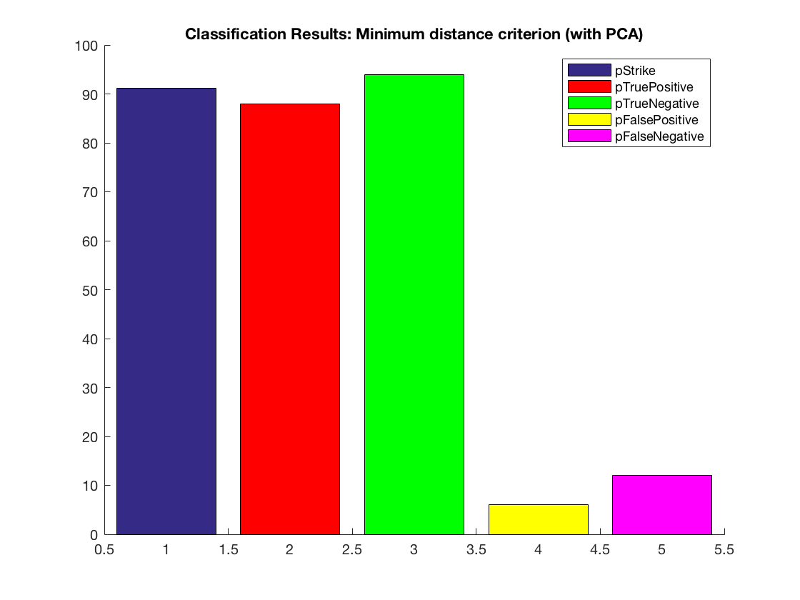
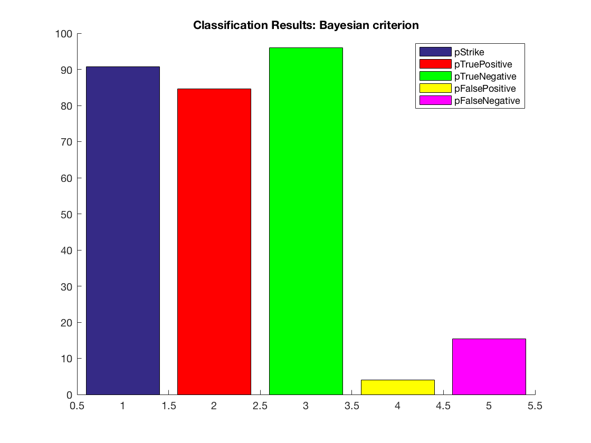

Contents
Data preparation
clear all
close all
clc
load('arrhythmia.mat')
A=arrhythmia;
A(:, find(sum(abs(A)) == 0)) = [];
class_id=A(:,end);
class_id(find(class_id>1))=2;
y=A;
y(:,end)=[];
[N,F]=size(y);
mean_y=mean(y,1);
stdv_y=std(y,1);
o=ones(N,1);
y=(y-o*mean_y)./(o*stdv_y);
mean_y=mean(y,1);
var_y=var(y,1);
save('arrhythmia_norm.mat','y')
y1=y(find(class_id==1),:);
y2=y(find(class_id==2),:);
n_healthy=sum(class_id==1);
n_ill=sum(class_id==2);
pi_1=n_healthy/N;
pi_2=n_ill/N;
Performing PCA
R_y=y'*y/N;
[U, E] = eig(R_y);
P = sum(diag(E));
percentage = 0.999;
new_P = percentage * P;
cumulative_P = cumsum(diag(E));
L = length(find(cumulative_P<new_P));
U_L = U(:,1:L);
Z = y * U_L;
mean_Z=mean(Z,1);
Z=Z./(o*sqrt(var(Z)));
Minimum Distance Criterion
z1=Z(find(class_id==1), :);
z2=Z(find(class_id==2), :);
w1=mean(z1,1);
w2=mean(z2,1);
wmeans=[w1;w2];
enZ=diag(Z*Z');
enW=diag(wmeans*wmeans');
dotprod_2=Z*wmeans';
[U2,V2]=meshgrid(enW,enZ);
dist_z=U2+V2-2*dotprod_2;
yhat_1=find(dist_z(:,1)<=dist_z(:,2));
yhat_2=find(dist_z(:,1)>dist_z(:,2));
n_false_negative=length(find(class_id(yhat_1)==2));
n_false_positive=length(find(class_id(yhat_2)==1));
n_true_negative=length(find(class_id(yhat_1)==1));
n_true_positive=length(find(class_id(yhat_2)==2));
p_true_positive=100*n_true_positive/n_ill;
p_true_negative=100*n_true_negative/n_healthy;
p_false_positive=100*n_false_positive/n_healthy;
p_false_negative=100*n_false_negative/n_ill;
p_strike=100*(n_true_positive+n_true_negative)/N
figure
hold on
b=bar(1,p_strike);
b2=bar(2,p_true_positive,'r');
b3=bar(3,p_true_negative,'g');
b4=bar(4,p_false_positive,'y');
b5=bar(5,p_false_negative,'m');
title('Classification Results: Minimum distance criterion (with PCA)')
legend('pStrike','pTruePositive','pTrueNegative','pFalsePositive','pFalseNegative')
p_strike =
91.1504

Bayes criterion
onevar=ones(N,1);
pis=zeros(1,2);
pis(1)=pi_1;
pis(2)=pi_2;
bayes_dist=dist_z-2*onevar*log(pis);
zhat_1=find(bayes_dist(:,1)<=bayes_dist(:,2));
zhat_2=find(bayes_dist(:,1)>bayes_dist(:,2));
n_true_negative_z=length(find(class_id(zhat_1)==1));
n_true_positive_z=length(find(class_id(zhat_2)==2));
n_false_negative_z=length(find(class_id(zhat_1)==2));
n_false_positive_z=length(find(class_id(zhat_2)==1));
p_true_positive_z=100*n_true_positive_z/n_ill;
p_true_negative_z=100*n_true_negative_z/n_healthy;
p_false_positive_z=100*n_false_positive_z/n_healthy;
p_false_negative_z=100*n_false_negative_z/n_ill;
p_strike_z=100*(n_true_positive_z+n_true_negative_z)/N
figure
hold on
b=bar(1,p_strike_z);
b2=bar(2,p_true_positive_z,'r');
b3=bar(3,p_true_negative_z,'g');
b4=bar(4,p_false_positive_z,'y');
b5=bar(5,p_false_negative_z,'m');
title('Classification Results: Bayesian criterion')
legend('pStrike','pTruePositive','pTrueNegative','pFalsePositive','pFalseNegative')
p_strike_z =
90.7080
